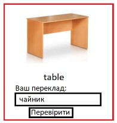
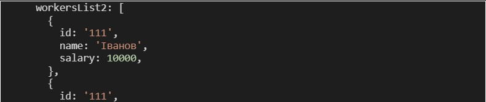
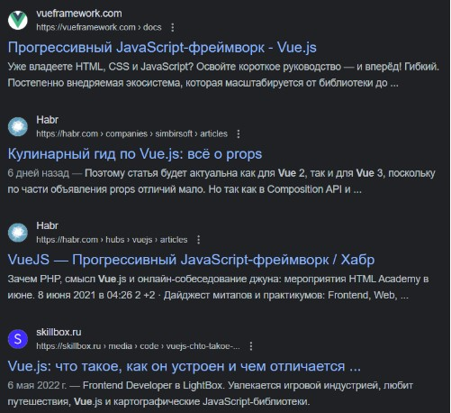
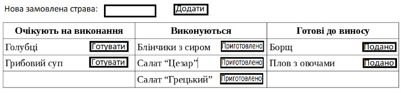

Вводимо логіна і пароль. Якщо логін вірний відображаємо
смайл. Якщо ні, то:
1) якщо логін = Іван – колір повідомлення про
помилку синій
2) якщо хтось інший, то колір повідомлення червоний
З випадаючого списку вибираємо клас квитка у літаку. Якщо
1) бізнес -
виводимо елементи для вибору газети та коньяку (якщо вибрано коньяк,
то запропонувати закуску (так/ні)), на фоні зображення бізнес кают
2)
економ – виводимо елементи для вибору типу пива і чипсів, на фоні
хмарки.
Елемент тренажера англійської. Виводимо зображення елемента і слово. Користувач вводить відповідь. Якщо вірно – відтворюємо фразу «Добре. Молодець!» (і додаємо зелену рамку до елемента), якщо ні - то відтворюємо фразу «Невірно, спробуйте ще раз» (і додаємо червону рамку).
Вивести список як маркований список з елементами у форматі (name: salary)
Самостійно сформуйте масив даних та виведіть фрагмент на зразок поданого (дані не обов’язково повинні співпадати)
На кухню поступають замовлення. Спочатку ми додаємо їх у список “Очікують на виконання”, якщо повар береться робити — замовлення переходить у список “Виконуються”, якщо замовлення виконано — переходить у список “Готові до виносу”. Якщо натиснути на “Подано” - страва зникає з таблиці
